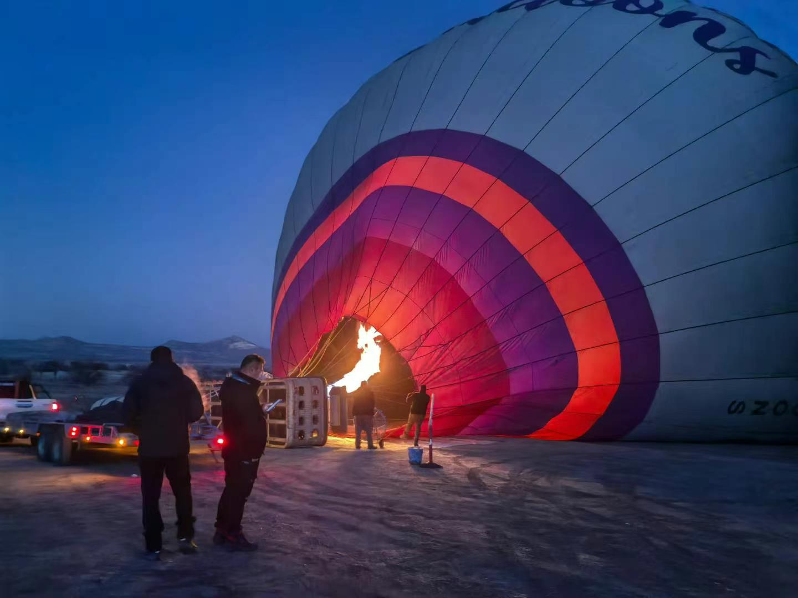
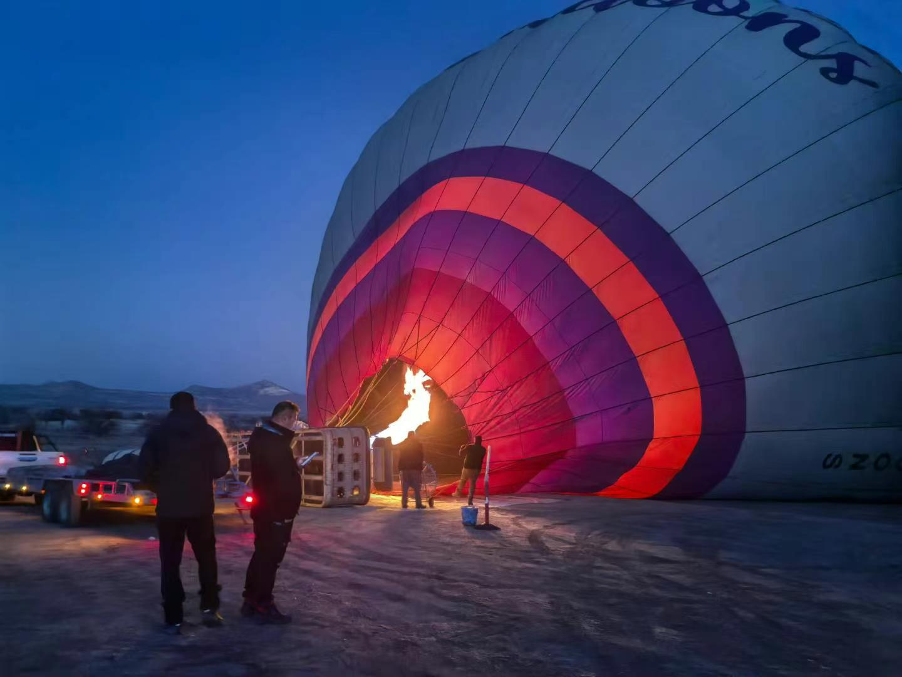
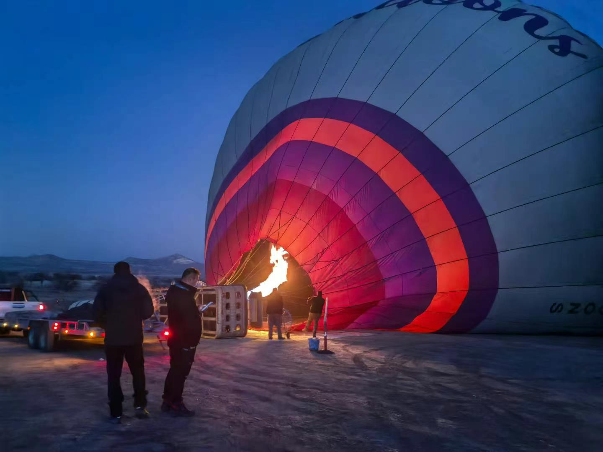

This is a personal memory space. It collects small moments from my travel in Turkey.
Click the image to return to the related page.

This website does not try to explain everything. It holds fragments instead of full stories ：）

 
